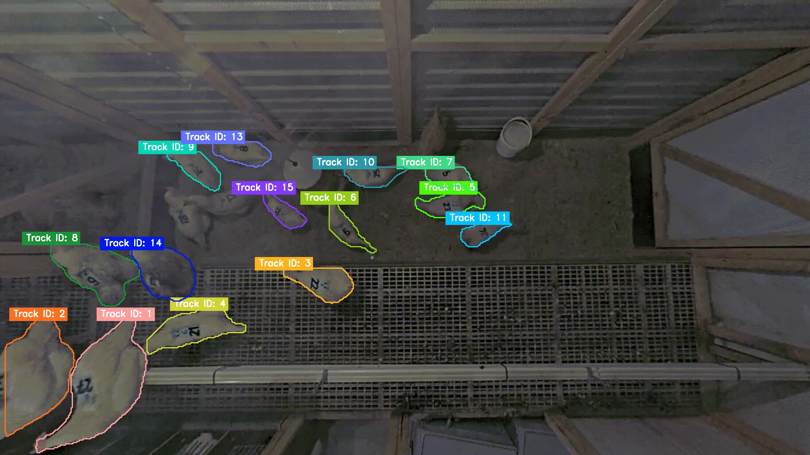
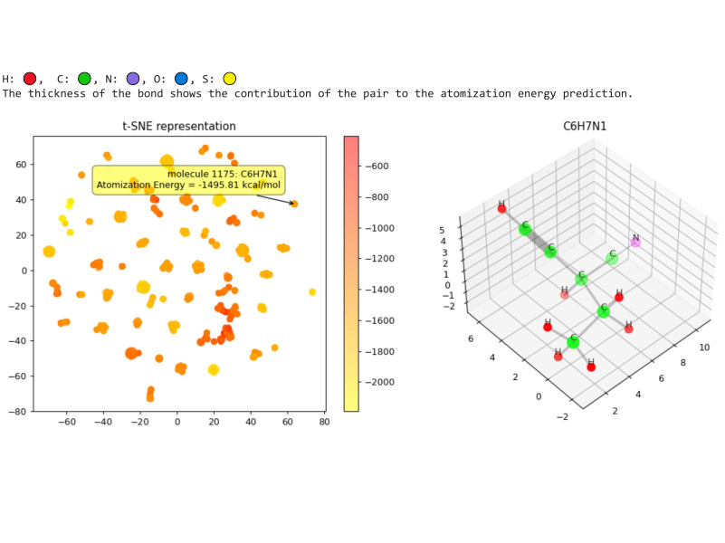
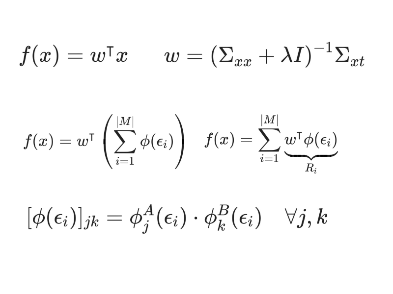
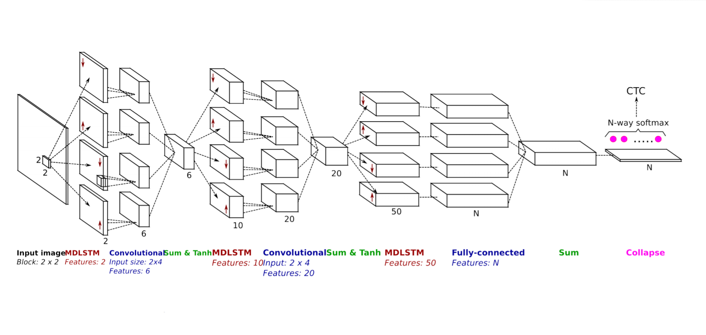

My Projects

Deep Learning for Hen Segmentation and Movement Tracking
- Ultralytics YOLO,
- and BoT-SORT
Made with:
Obesity Prediction
- and scikit-learn
Made with:



Quantum-Chemical Insights from Molecular Data
- scikit-learn,
- and scipy
Made with:
Leaf Specimen Attributes Analysis
Made with:

Handwritten Text Recognition using AI
Made with:
My Skills
My Education
Freie Universität (Berlin, Germany)
Master of Science in Data Science
Oct 2022 - Current
Thakur College of Engineering and Technology (Mumbai, India)
Bachelor of Engineering in Information Technology
Aug 2018 - May 2022
CGPA: 9.27/10.00